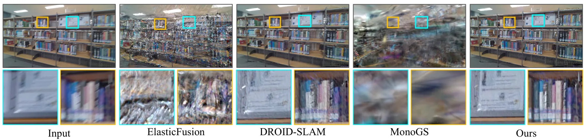
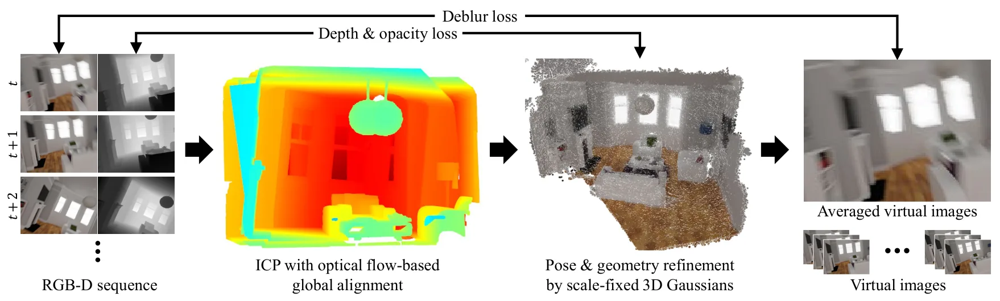
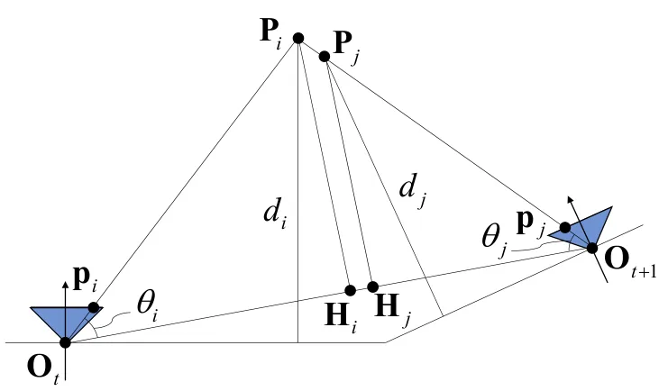
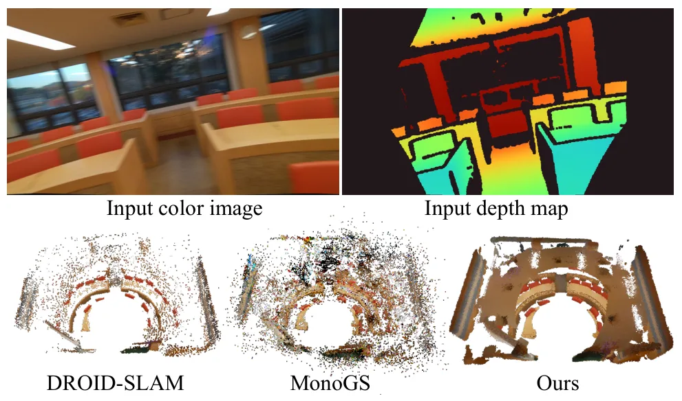
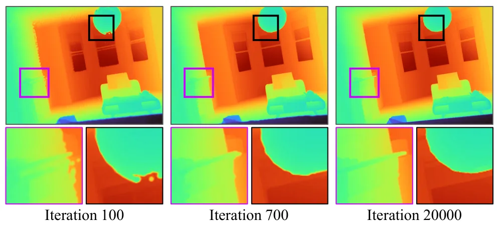
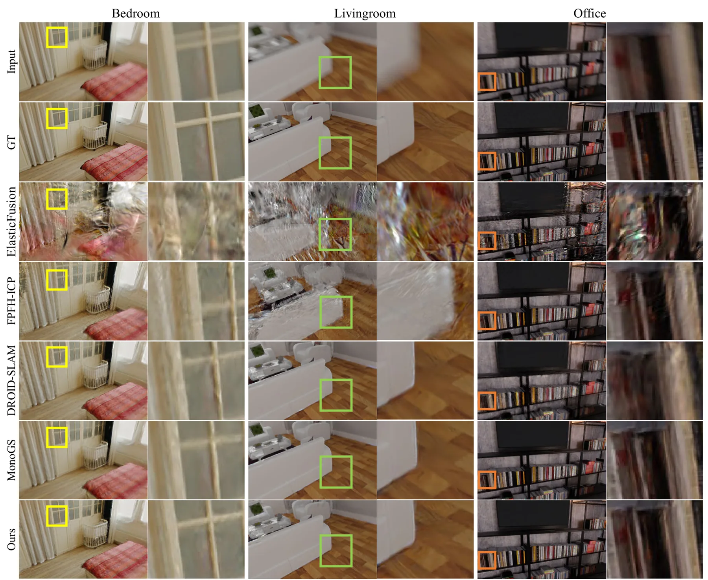
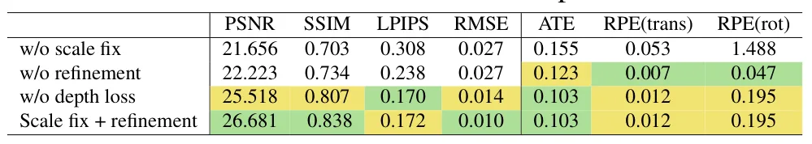
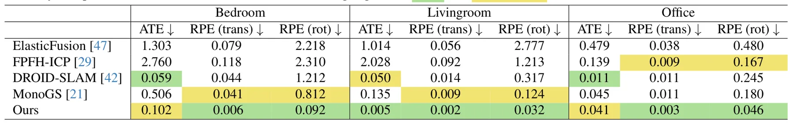
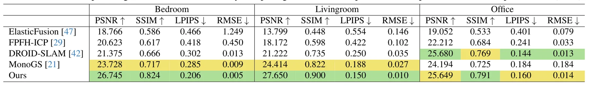

极端运动模糊下的 Splat-based 三维场景重建Splat-based 3D Scene Reconstruction with Extreme Motion-blur
直接命中恶劣成像下的定位与重建，并有代码和数据；位姿 ATE、深度噪声敏感性及在线能力仍需正文验证。
一句话工作总结
在 3DGS 中联合优化 RGB-D 位姿、深度几何和曝光内运动，处理低照高速运动导致的 COLMAP/ICP 失效。
摘要
本文面向低照度下长曝光造成的极端运动模糊，提出基于 RGB-D 输入的 Gaussian Splatting 三维重建方法。系统先通过 optical flow 与 ICP 对齐连续帧，再通过调整 Gaussian 位置优化深度对齐，从而联合细化相机位姿与三维几何；同时显式建模曝光期间的相机运动，将输入模糊图像与一系列清晰渲染帧比较以完成去模糊。作者在新建 RGB-D 极端运动模糊数据集上报告优于现有方法，并公开代码与数据。
We propose a splat-based 3D scene reconstruction method from RGB-D input that effectively handles extreme motion blur, a frequent challenge in low-light environments. Under dim illumination, RGB frames often suffer from severe motion blur due to extended exposure times, causing traditional camera pose estimation methods, such as COLMAP, to fail. This results in inaccurate camera pose and blurry color input, compromising the quality of 3D reconstructions. Although recent 3D reconstruction techniques like Neural Radiance Fields and Gaussian Splatting have demonstrated impressive results, they rely on accurate camera trajectory estimation, which becomes challenging under fast motion or poor lighting conditions. Furthermore, rapid camera movement and the limited field of view of depth sensors reduce point cloud overlap, limiting the effectiveness of pose estimation with the ICP algorithm. To address these issues, we introduce a method that combines camera pose estimation and image deblurring using a Gaussian Splatting framework, leveraging both 3D Gaussian splats and depth inputs for enhanced scene representation. Our method first aligns consecutive RGB-D frames through optical flow and ICP, then refines camera poses and 3D geometry by adjusting Gaussian positions for optimal depth alignment. To handle motion blur, we model camera movement during exposure and deblur images by comparing the input with a series of sharp, rendered frames. Experiments on a new RGB-D dataset with extreme motion blur show that our method outperforms existing approaches, enabling high-quality reconstructions even in challenging conditions. This approach has broad implications for 3D mapping applications in robotics, autonomous navigation, and augmented reality. Both code and dataset are publicly available on https://github.com/KAIST-VCLAB/gs-extreme-motion-blur.
中文解读摘录
- 作者：Hyeonjoong Jang, Dongyoung Choi, Donggun Kim, Woohyun Kang, Min H. Kim
- 价值判断：把相机位姿估计、深度几何优化与曝光期间运动建模放入 Gaussian Splatting 框架，直接针对低照度快速运动导致 COLMAP 失败、RGB 模糊和 ICP 重叠不足的问题。
- 技术要点：先以 optical flow 与 ICP 对齐连续 RGB-D 帧，再调整 Gaussian 位置以优化深度对齐；通过曝光期间一系列清晰渲染帧反演相机运动并去模糊。
- 后续核查：新数据集规模、深度噪声敏感性、在线性、与 blur-aware NeRF/3DGS 及 RGB-D SLAM 的位姿 ATE 对比。
- 链接：arXiv · PDF · 代码/数据
图表/页面预览
{kind=link}

{kind=link}

{kind=link}

{kind=link}

{kind=link}

{kind=link}

{kind=link}

{kind=link}

{kind=link}
